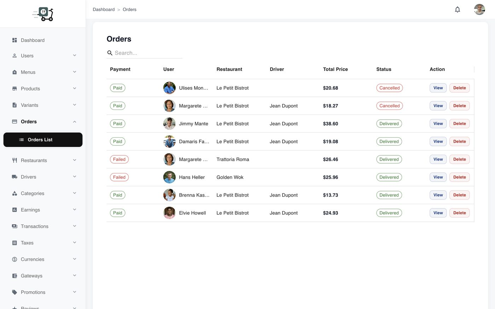
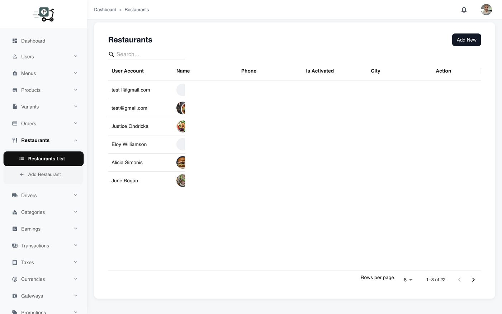
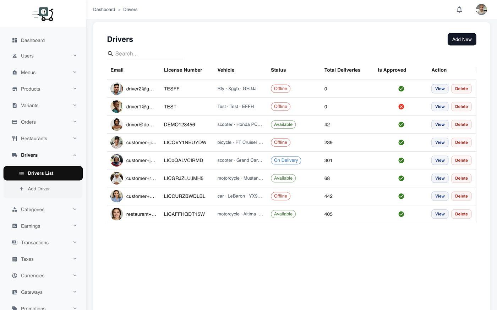
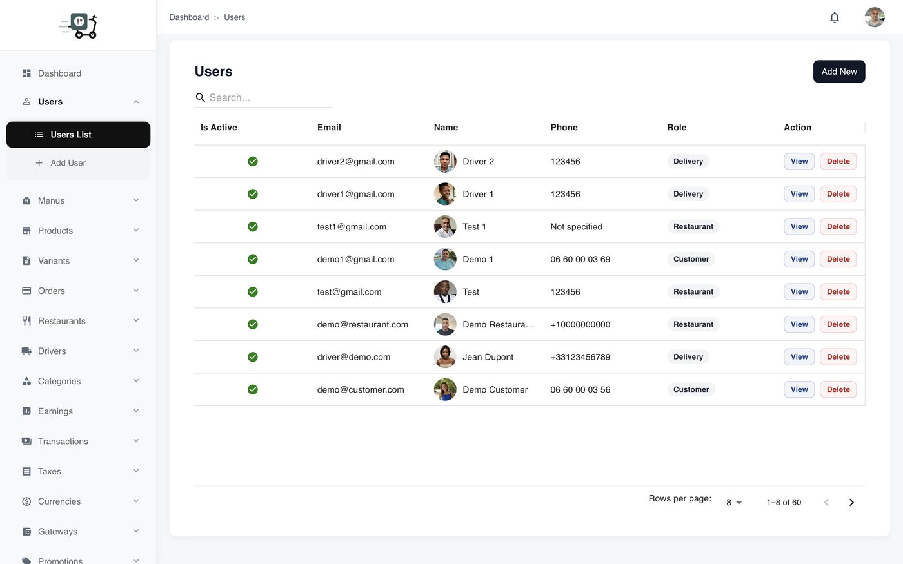
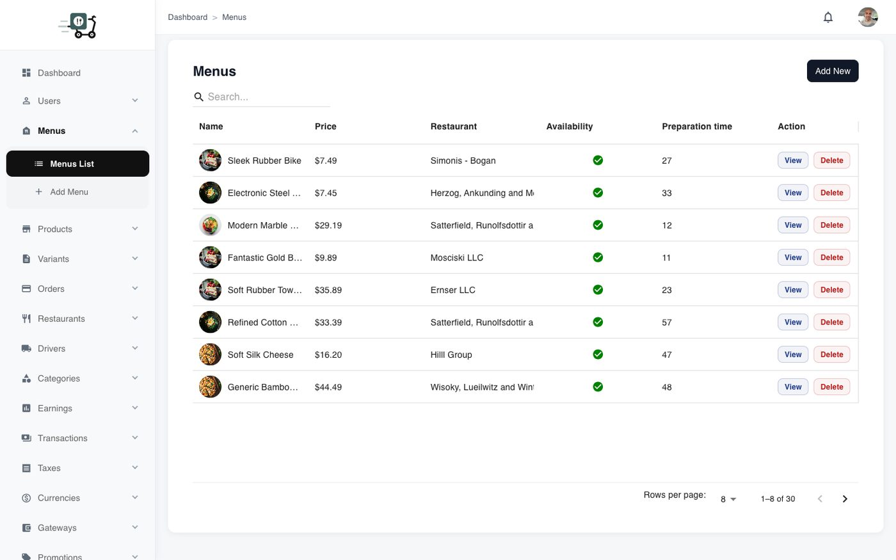

Operations
The day-to-day control room: orders, restaurants, customers, drivers, and the food catalog that powers every mobile app.
Orders and partners
Admin is the marketplace command center. Support should investigate from one place without asking three mobile apps for screenshots. Start from dashboard KPIs, then drill into orders and partner accounts.
Orders
The orders list shows payment state, customer, restaurant, driver, totals, and fulfillment status. View opens full detail (line items, delivery, timeline) for failed payments, stuck statuses, or missing drivers.
- Open Orders when a live incident starts.
- Filter or find the order by customer / restaurant / id.
- Use View for the full record before changing status or contacting partners.

Restaurants
Restaurant management covers onboarding and ongoing control: activate or close partners, keep profiles consistent with what the customer app displays, and intervene when a location should not stay live.

Drivers
Approve drivers before they go online, keep identity and vehicle details coherent, and suspend when needed. Couriers that skip approval create support noise and marketplace risk.

Users (customers)
Customer users are where you investigate accounts, edit profiles, or suspend abuse. Pair this with the orders list when a dispute needs both the person and their tickets.

Menus and catalog
Categories, menus, products, and variants can be curated centrally when partners need help — or when you seed a new city. What you publish here is what customers browse and what restaurants edit on mobile when you allow dual management.
